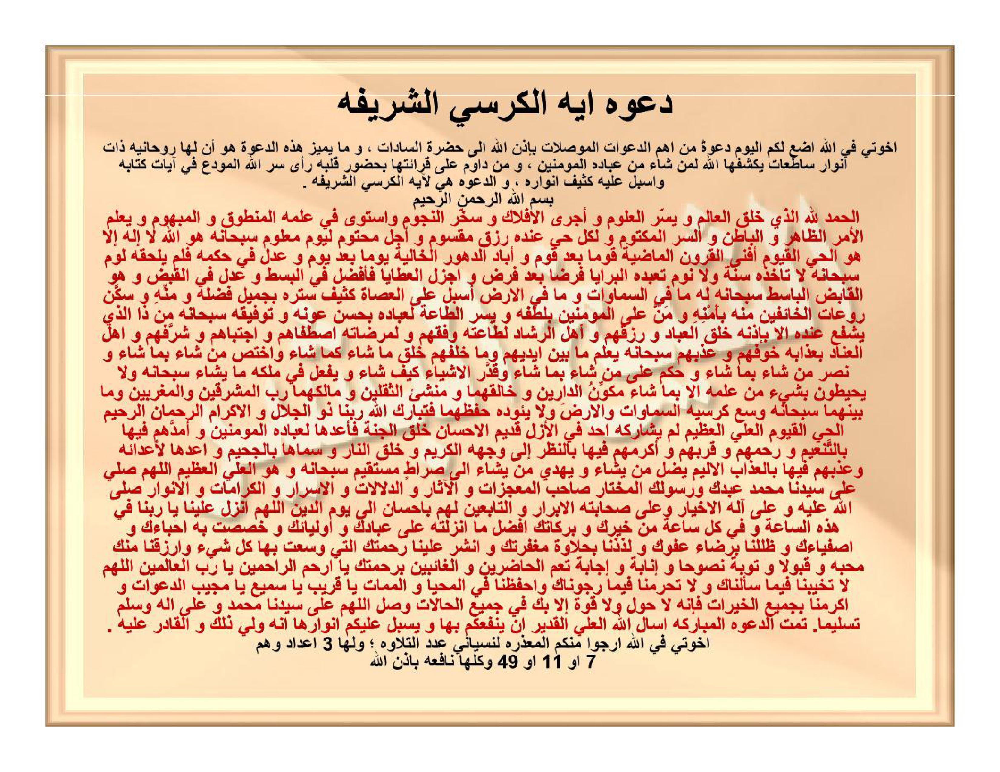

Da'watu Āyatil-Kursiyyisy-syarīfati.
Ikhwatī fillāhi adha'u lakumul-yauma da'watan min ahammid-da'awātil-muwashshilāti bi-idznillāhi ilā hadhratis-sādāti, wa mā yumayyizu hādzihid-da'wata huwa anna lahā rūhāniyyatan dzāta anwārin sāthi'ātin yaksyifuhallāhu liman syā'a min 'ibādihil-mu'minīna, wa man dāwama 'alā qirā'atihā bihudhūri qalbihī ra'ā sirrallāhil-mūda'a fī āyāti kitābihī wa asbala 'alaihi katsīfa anwārihī, wad-da'watu hiya li-Āyatil-Kursiyyisy-syarīfati.
Bismillāhir-rahmānir-rahīmi.
Al-hamdu lillāhil-ladzī khalaqal-'ālama wa yassaral-'ulūma wa ajral-aflāka wa sakhkharan-nujūma wastawā fī 'ilmihil-manthūqu wal-mafhūmu wa ya'lamul-amrazh-zhāhira wal-bāthina was-sirral-maktūma wa likulli hayyin 'indahū rizqun maqsūmun wa ajalun mahtūmun liyaumin ma'lūmin subhānahū huwallāhu lā ilāha illā huwal-Hayyul-Qayyūmu. Afnal-qurūnal-mādhiyata qauman ba'da qaumin wa abādad-duhūral-khāliyata yauman ba'da yaumin wa 'adala fī hukmihī falam yalhaqhu laumun subhānahū lā ta'khudzuhū sinatun wa lā naumun. Ta'abbadahul-barāyā fardhan ba'da fardhin wa ajzalal-'athāyā fa-afdhala fil-basthi wa 'adala fil-qabdhi wa huwal-Qābidhul-Bāsithu subhānahū lahū mā fis-samāwāti wa mā fil-ardhi. Asbala 'alal-'ushāti katsīfa sitrihī bijamīli fadhlihī wa mannihī wa sakkana rau'ātil-khā'ifīna minhu bi-amnihī wa manna 'alal-mu'minīna biluthfihī wa yassarath-thā'ata li'ibādihī bihusni 'aunihī wa taufīqihī subhānahū man dzal-ladzī yasyfa'u 'indahū illā bi-idznihī. Khalaqal-'ibāda wa razaqahum wa ahlar-rasyādi lithā'atihī waffaqahum wa limardhātihi-shhafāhum wajtabāhum wa syarrafahum wa ahlal-'inādi bi'adzābihī khawwafahum wa 'adzdzabahum subhānahū ya'lamu mā baina aidīhim wa mā khalfahum. Khalaqa mā syā'a kamā syā'a wakhtashsha man syā'a bimā syā'a wa nashara man syā'a bimā syā'a wa hakama 'alā man syā'a bimā syā'a wa qaddaral-asyyā'a kaifa syā'a wa yaf'alu fī mulkihī mā yasyā'u subhānahū wa lā yuhīthūna bisyai'in min 'ilmihī illā bimā syā'a. Mukawwinud-dāraini wa khāliquhumā wa munsyi'uts-tsaqalaini wa mālikuhumā Rabbul-masyriqaini wal-maghribaini wa mā bainahumā subhānahū wasi'a kursiyyuhus-samāwāti wal-ardha wa lā ya'ūduhū hifzhuhumā. Fatabārakallāhu Rabbunā Dzul-jalāli wal-ikrāmi ar-Rahmānur-Rahīmul-Hayyul-Qayyūmul-'Aliyyul-'Azhīmu lam yusyārik-hu ahadun fil-azali qadīmul-ihsāni khalaqal-jannata fa-a'addahā li'ibādihil-mu'minīna wa amaddahum fīhā bit-tan'īmi wa rahimahum wa qarrabahum wa akramahum fīhā bin-nazhari ilā wajhihil-karīmi wa khalaqan-nāra wa sammāhā bil-jahīmi wa a'addahā li-a'dā'ihī wa 'adzdzabahum fīhā bil-'adzābil-alīmi yudhillu man yasyā'u wa yahdī man yasyā'u ilā shirāthin mustaqīmin subhānahū wa huwal-'Aliyyul-'Azhīmu. Allāhumma shalli 'alā sayyidinā Muhammadin 'abdika wa rasūlikal-mukhtāri shāhibil-mu'jizāti wal-ātsāri wad-dalālāti wal-asrāri wal-karāmāti wal-anwāri shallallāhu 'alaihi wa 'alā ālihil-akhyāri wa 'alā shahābatihil-abrāri wat-tābi'īna lahum bi-ihsānin ilā yaumid-dīni. Allāhumma anzil 'alainā yā Rabbanā fī hādzihis-sā'ati wa fī kulli sā'atin min khairika wa barakātika afdhala mā anzaltahū 'alā 'ibādika wa auliyā'ika wa khashashta bihī ahibbā'aka wa ashfiyā'aka wa zhallilnā biridhā'i 'afwika wa ladzdzidznā bihalāwati maghfiratika wansyur 'alainā rahmatakal-latī wasi'ta bihā kulla syai'in warzuqnā minka mahabbatan wa qabūlan wa taubatan nashūhan wa inābatan wa ijābatan ta'ummul-hādhirīna wal-ghā'ibīna birahmatika yā Arhamar-rāhimīna yā Rabbal-'ālamīna. Allāhumma lā tukhayyibnā fīmā sa'alnāka wa lā tahrimnā fīmā rajaunāka wahfazhnā fil-mahyā wal-mamāti yā Qarību yā Samī'u yā Mujībad-da'awāti wa akrimnā bijamī'il-khairāti fa-innahū lā haula wa lā quwwata illā bika fī jamī'il-hālāti wa shallillāhumma 'alā sayyidinā Muhammadin wa 'alā ālihī wa sallim taslīman. Tammatid-da'watul-mubārakatu as'alullāhal-'Aliyyal-Qadīra an yanfa'akum bihā wa yusbila 'alaikum anwārahā innahū waliyyu dzālika wal-qādiru 'alaihi.
Ikhwatī fillāhi arjū minkumul-ma'dzirata linisyānī 'adadat-tilāwati; wa lahā 3 a'dādin wa hum:
7 au 11 au 49 wa kulluhā nāfi'atun bi-idznillāhi.
Doa Ayat Kursi yang mulia.
Wahai saudara-saudaraku karena Allah, pada hari ini aku letakkan untuk kalian sebuah doa yang termasuk doa-doa terpenting yang dapat menyampaikan pengamalnya dengan izin Allah ke hadirat para pemimpin wali (hadhratus-sādāt). Adapun keistimewaan doa ini ialah bahwa ia memiliki ruhaniyyah yang memancarkan cahaya-cahaya yang terang benderang, yang disingkapkan oleh Allah bagi siapa saja yang dikehendaki-Nya di antara hamba-hamba-Nya yang beriman. Barang siapa mendawamkan (merutinkan) pembacaannya dengan kehadiran hatinya, niscaya ia akan menyaksikan rahasia Allah yang dititipkan di dalam ayat-ayat Kitab-Nya, dan Allah akan mencurahkan ke atasnya limpahan cahaya-Nya yang lebat. Adapun doa ini adalah Doa Ayat Kursi yang mulia:
Dengan menyebut nama Allah Yang Maha Pengasih lagi Maha Penyayang.
Segala puji bagi Allah yang telah menciptakan alam semesta, memudahkan berbagai ilmu, memperjalankan falak-falak, dan menundukkan bintang-bintang; sama jelas di dalam ilmu-Nya apa yang terucap maupun apa yang tersirat (dipahami); Dia mengetahui perkara yang tampak lahir, yang tersembunyi batin, maupun rahasia yang tersimpan rapat; dan bagi setiap makhluk hidup di sisi-Nya terdapat rezeki yang telah dibagikan serta batas ajal yang telah ditetapkan untuk suatu hari yang telah ditentukan. Mahasuci Dia: “Dialah Allah, tidak ada tuhan yang berhak disembah selain Dia, Yang Maha Hidup lagi Maha Berdiri Sendiri mengurus makhluk-Nya” (QS. al-Baqarah: 255). Dia telah membinasakan generasi-generasi terdahulu umat demi umat, dan mengakhiri masa-masa yang lampau hari demi hari, serta berlaku adil dalam ketetapan hukum-Nya sehingga tiada celaan sedikit pun yang menyentuh-Nya. Mahasuci Dia: “Tidak mengantuk dan tidak pula tidur”. Seluruh makhluk menghambakan diri kepada-Nya dari satu kewajiban ke kewajiban berikutnya, dan Dia melimpahkan pemberian-pemberian yang besar; maka Dia Maha Melimpahkan karunia saat melapangkan (al-basth) dan Maha Adil saat menyempitkan (al-qabdh), dan Dialah Yang Maha Menyempitkan lagi Maha Melapangkan. Mahasuci Dia: “Milik-Nyalah apa yang ada di langit dan apa yang ada di bumi”. Dia menurunkan tirai penutup aib-Nya yang rapat ke atas para pelaku maksiat berkat keindahan karunia dan kemurahan-Nya, menenangkan ketakutan orang-orang yang gentar kepada-Nya dengan jaminan keamanan-Nya, menganugerahkan nikmat kepada orang-orang mukmin dengan kelembutan-Nya, serta memudahkan ketaatan bagi hamba-hamba-Nya dengan kebaikan pertolongan dan taufik-Nya. Mahasuci Dia: “Tiada yang dapat memberi syafaat di sisi-Nya tanpa izin-Nya”. Dia menciptakan hamba-hamba dan memberi mereka rezeki; terhadap ahli petunjuk, Dia memberi mereka taufik untuk menaati-Nya, serta untuk meraih keridhaan-Nya Dia memilih mereka, mendekatkan mereka, dan memuliakan mereka; sedangkan terhadap ahli pembangkangan, dengan azab-Nya Dia mempertakuti mereka dan mengazab mereka. Mahasuci Dia: “Dia mengetahui apa yang ada di hadapan mereka dan apa yang ada di belakang mereka”. Dia menciptakan apa yang dikehendaki-Nya sebagaimana yang dikehendaki-Nya, mengkhususkan siapa yang dikehendaki-Nya dengan apa yang dikehendaki-Nya, menolong siapa yang dikehendaki-Nya dengan apa yang dikehendaki-Nya, menetapkan hukum atas siapa yang dikehendaki-Nya dengan apa yang dikehendaki-Nya, menetapkan ukuran segala sesuatu bagaimana pun yang dikehendaki-Nya, dan Dia berbuat di dalam kerajaan-Nya apa saja yang dikehendaki-Nya. Mahasuci Dia: “Dan mereka tidak mengetahui sesuatu apa pun dari ilmu-Nya melainkan apa yang dikehendaki-Nya”. Dialah Pembentuk dua negeri (dunia dan akhirat) sekaligus Pencipta keduanya, Pencipta dua bangsa yang dibebani syariat (manusia dan jin) sekaligus Pemilik keduanya, serta Tuhan dua timur dan dua barat beserta apa yang ada di antara keduanya. Mahasuci Dia: “Kursi-Nya meliputi langit dan bumi, dan Dia tidak merasa berat memelihara keduanya”. Maka Mahaberkah Allah, Tuhan kami, Pemilik Keagungan dan Kemuliaan, Yang Maha Pengasih, Maha Penyayang, Maha Hidup, Maha Berdiri Sendiri, Maha Tinggi, lagi Maha Agung; tiada seorang pun yang bersekutu dengan-Nya sejak zaman azali, Yang Qadim (Terdahulu tanpa awal) kebaikan-Nya; Dia telah menciptakan surga lalu menyiapkannya bagi hamba-hamba-Nya yang beriman, melimpahi mereka di dalamnya dengan kenikmatan, merahmati mereka, mendekatkan mereka, dan memuliakan mereka di dalamnya dengan memandang kepada Wajah-Nya Yang Mulia; dan Dia telah menciptakan neraka serta menamakannya dengan al-Jahīm, menyiapkannya bagi musuh-musuh-Nya, dan mengazab mereka di dalamnya dengan azab yang pedih; Dia menyesatkan siapa yang dikehendaki-Nya dan memberi petunjuk siapa yang dikehendaki-Nya ke jalan yang lurus. Mahasuci Dia: “Dan Dia Maha Tinggi lagi Maha Agung”. Ya Allah, limpahkanlah shalawat atas junjungan kita Muhammad, hamba-Mu dan utusan-Mu yang terpilih, pemilik berbagai mukjizat, jejak-jejak peninggalan mulia, bukti-bukti kenabian, rahasia-rahasia, karamah-karamah, dan cahaya-cahaya; semoga Allah melimpahkan shalawat atas beliau, atas keluarga beliau yang terpilih, atas para sahabat beliau yang berbakti, serta orang-orang yang mengikuti mereka dengan kebaikan hingga hari pembalasan. Ya Allah, turunkanlah ke atas kami, wahai Tuhan kami, pada saat ini dan pada setiap saat, dari kebaikan-Mu dan keberkahan-keberkahan-Mu, seutama-utama apa yang telah Engkau turunkan ke atas hamba-hamba-Mu dan para wali-Mu serta yang Engkau khususkan dengannya para kekasih-Mu dan hamba-hamba pilihan-Mu; naungilah kami dengan keridhaan maaf-Mu, rasakanlah kepada kami lezatnya manisnya ampunan-Mu, bentangkanlah ke atas kami rahmat-Mu yang dengannya Engkau meliputi segala sesuatu, dan anugerahkanlah kepada kami dari sisi-Mu kecintaan, penerimaan, taubat nasuha, kembalinya hati kepada-Mu (inābah), serta pengabulan doa yang mencakup seluruh yang hadir maupun yang tidak hadir, dengan rahmat-Mu wahai Dzat Yang Paling Penyayang di antara para penyayang, wahai Tuhan semesta alam. Ya Allah, janganlah Engkau kecewakan kami dalam apa yang kami mohonkan kepada-Mu, janganlah Engkau halangi kami dari apa yang kami harapkan kepada-Mu, dan jagalah kami dalam kehidupan maupun kematian, wahai Yang Maha Dekat, wahai Yang Maha Mendengar, wahai Yang Maha Mengabulkan doa-doa; dan muliakanlah kami dengan seluruh kebaikan, karena sesungguhnya tiada daya dan tiada kekuatan melainkan dengan pertolongan-Mu dalam segala keadaan; dan limpahkanlah shalawat, ya Allah, atas junjungan kita Muhammad beserta keluarga beliau, serta limpahkanlah keselamatan yang sebenar-benarnya. Selesailah doa yang diberkahi ini. Aku memohon kepada Allah Yang Maha Tinggi lagi Maha Kuasa agar memberikan manfaat kepada kalian dengannya dan mencurahkan ke atas kalian cahaya-cahayanya; sesungguhnya Dia adalah Pelindung dalam hal itu dan Maha Kuasa atasnya.
Wahai saudara-saudaraku karena Allah, aku memohon maaf kepada kalian atas kelupaanku mencantumkan jumlah bacaannya; doa ini memiliki 3 pilihan jumlah bilangan, yaitu:
7 atau 11 atau 49 kali, dan semuanya bermanfaat dengan izin Allah.
